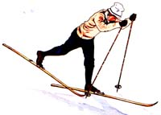
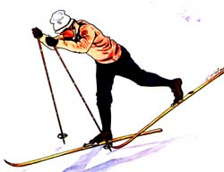

In MOTHER NO. 38, Steve Brown showed that self-publishing can be a rewarding-in more ways than one-home business. (See "You Can Start Your Own Publishing Business", pages 86-89.) Gary Noren discovered this fact four years ago when he-along with friend Dwight Olsen-wrote and published a $2.75 trail guide which has since sold 10,000 copies in the Minneapolis-St. Paul area. Here, Gary reveals how he and Dwight managed to create a "best-seller" in their spare time.
If you're looking for a way to make extra income in your spare time (is there anyone who isn't?), you could do a whole lot worse than write, publish, and market your own regional trails guide. With thousands upon millions of people "getting back to nature" via outdoor sports right now (sports such as backpacking, canoeing, and cross-country skiing), the demand for "wilderness literature" is at an all-time high. Which means you should have little trouble making expenses with your self-published guidebook. In fact, you could very well end up-like me-with a best-seller on your hands.
More important than the money you're bound to make, however, is the fact that by writing a regional trails guide you'll [1] help satisfy the public's insatiable appetite for information...regarding wilderness areas, [2] publicize the scarcity of well-maintained trails in your state (if such a scarcity exists, which it almost certainly does), and [3] maybe-just maybe-get some parks And recreation officials moving in the direction of opening up more land.
Besides which, putting together your own book can be a lot of fun . . . as my friend, Dwight Olsen, and I (and our wives) discovered when we researched, wrote, printed, and marketed Ski Minnesota , a ski touring guidebook which has sold 10,000 copies in the four short years of its existence.
Here's how we created our "backwoods best-seller" . . . along with a few words of advice on how you can publish and sell your own regional trails guide.
After we'd both worked in a cross-country ski shop for a year-and endured the mad rush of first-snow novices (who'd invariably ask "Where can we go to ski?")-Dwight and I got to thinking: Why don't we publish our own guide to Minnesota's cross-country ski trails ... and sell the manual in shops such as the one where we worked?
Well, it didn't take us long to convince ourselves-and our spouses-that we had a winning idea ... and that we should implement it before the next "mad rush" was upon us.
We started work on the book in August 1973. As you might guess from the volume's subtitle-A Cross-Country Skier's Guide to Minnesota and Western Wisconsin - we de cided to limit the scope of our efforts to skiing (rather than hiking) areas. We did not, however, restrict our book's discussion to trails as such. If we had, our manual would've contained guides to only 15 trails instead of the 70 "areas to ski" listings that we finally included.
Since our main objective was to let folks know where they could go to ski, our first major task in writing the book was to send inquiry letters to all the various resorts, government agencies, ski magazine publishers, and concerned individuals who we felt might have information regarding possible ski areas. The local North Star Ski Touring Club provided us with many of these contacts.
As info began to filter back in, we plotted the various ski locales on a state map so we could get an idea of how they were distributed. Then we focused our attention on the problem of how to organize our presentation of this info in the guide. We ultimately decided to [A] divide the book into five parts, corresponding to five geographical regions, and [B] classify the ski trails within each part according to whether the trails are publicly or privately owned.
At this point, Dwight and I began to write up the salient facts pertaining to each ski area, while our cartographically inclined wives-Marsha and Liz-drew up the accompanying maps.
Our responsibilities during the writing phase usually overlapped, but we did have a few specialties. Dwight, for instance, was our layout and typing expert. I wrote most of the general descriptions of ski areas (in addition to helping Dwight with the editing and indexing), and Liz designed the cover. All four of us got into the act when it came to title selection and format.
Our philosophy for the book was simple and straightforward: We vowed [11 to present only essential information-location, description, terse comment, and map-concerning each ski area, and [2] to make this info easily accessible. Our idea, in other words, was to hit the reader (or prospective buyer) in the face with useful material the instant he or she opened the book. And to a large extent, I think we succeeded in doing this.
During the writing phase (late summer 1973), we contacted several print shops ... and learned that-as a rule-the smaller outfits were more accommodating and more willing to take the time to explain the printing business to neophytes such as ourselves. In contrast, most of the huge, established printers wanted to see a copy of our manuscript before they'd even talk to us ... which simply wasn't possible, since we needed answers to questions that came up while the manuscript was being prepared.
The shop we ended up doing business with-a local operation called The Printery-was extremely understanding when it came to helping us work within our means. The folks at that establishment didn't hesitate to quote "per copy" costs for various paper stocks, layout techniques, and total press runs. (Naturally, the more guides we printed, the lower our "per copy" cost.)
We kept in touch with The Printery throughout the writing phase and-after many planning and writing marathons (as well as a 12-hour typing stint by Dwight)-finally delivered our manuscript in October. A month later-just in time for the big Christmas ski rush-we found ourselves with 5,000 books on our hands.
Our agreement with The Printery called for an initial press run of 5,000 copies at a cost of $4,500 (90 cents per book), with a down payment of $ 1,000. Thanks mainly to Eastern Mountain
Sports-the shop where Dwight and I worked-we were able to raise the initial $1,000 through advance orders for our book. We then paid off the remainder of our debt ($3,500) as retailers paid us for the guides we delivered to them.
The marketing of Ski Minnesota introduced us to nearly every ski shop, bookstore, and book wholesaler in the Minneapolis-St. Paul area. We ultimately wound up with some 50 local accounts to service ... which left us with little time to devote to out-of-state sales. (Nonetheless, we did have a post office box-set up for us by our printer-for mail orders from non-Twin Cities folks who discovered our guide through ski show booths, ski magazine write-ups, or the few newspaper ads we ran.)
Like the researching and writing phases, the marketing end of our project presented its own knotty problems ... one of the knottiest being the question of whether or not we should give quantity discounts to volume buyers. We decided that while it's true we do save time and money when we're able to deliver a large order to just one delivery point ... it's also true that "graduated rate schedules" tend to make it harder for the smaller retailers to compete with the established giants. Thus, on purely ethical grounds we chose NOT to give quantity discounts.
As luck would have it, this decision led quickly to another problem ... for no sooner had we set our price to retailers at $1.75 per copy (a buck off the book's cover price) than we got an opportunity to sell several hundred guides to one of the larger bookstores in the area at $1.65 per copy. We had a heckuva time refusing that order, but-with heavy hearts-we finally did turn it down. We just couldn't see violating our "no quantity discount" policy (even this once).
There's a happy ending to this story, though. A month after this incident, we lowered our price to all retailers and sold the bookstore the quantity of guides they wanted. And ever since that sale, our prices have remained fixed: $1.65 per copy to retailers, and $1.375 per copy to wholesalers.
If someone were to ask me what the self-publishing guidebook writer could do to make his or her life easier, the first thing I'd have to say would be: "Seek help from local clubs!" I know our lives were made much easier by members of the North Star Ski Touring Club, who were instrumental in helping us find and organize our facts in the beginning. (Some members even consented to write introductory articles for our book.) In return for this generosity, we sold the club's officers as many copies of Ski Minnesota as they wanted to buy, at our printing cost. (The officers-in turn- were able to offer the guides to club members at a substantial discount off the cover price . . . and still make a nice profit for the club treasury.)
Another idea worth considering: Sell advertising space in a guide to retailers and/or resort owners. Our purist instincts didn't allow us to take advantage of this idea when we were planning Ski Minnesota... but I mention it here anyway because it could help defray one's printing expenses and thereby make it possible to hold down the retail price of a book.
If the thought of putting ads in your masterpiece doesn't appeal to you-but you still need some way to raise a few bucks before the printing bill arrives-by all means solicit advance orders for your guide. Here, what we did was [A] have the cover of our book printed ahead of time and [B] take samples with us to show to local retailers as part of our sales "pitch". (When store managers can see what you've got to sell, they're more apt to buy. Proof of the pudding is that we took in more than 2,000 orders for Ski Minnesota before it'd even left the bindery!)
I suppose the main thing we've learned from our foray into the self-publishing field is that it's darn easy to be over-optimistic about the sales potential of your own book. When we took 2,000 advance orders for Ski Minnesota within just a few weeks for instance, we were so giddy with elation that we immediately arranged for the printing of 5,000 extra guides . . . over and above the initial 5,000-copy press run! As a result, it took us a year to break even on our printing expenses, and a year after that to begin to reap a modest harvest for our toil (if you can call $4,000 so far "modest").
Finally, back in February of this year, we sold the 10,000th copy of Ski Minnesota. And would you believe it? The ski shops (and department stores and bookstores) are clamoring for more!
Which only reinforces what I said at the beginning of this article: namely that, of the throngs of people active in-or taking up-outdoor sports right now, untold thousands are stark, raving hungry for information. All we've done is give these folks what they want (and pocketed some grocery money as a result). And you can do the same ... by writing a regional trails guide.
(For a good explanation of the ins and outs of a selfpublishing enterprise, be sure to read Steve Brown's article, "You Can Start Your Own Publishing Business" [MOTHER NO. 38, pages 86 - 89] - MOTHER.)
|
 |
 |
|